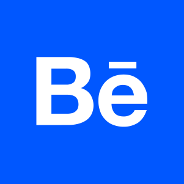

José Lages
About
Skills
Work
Contacts
I'm a
??
years old web designer with a multimedia design background. Currently working on becoming a better coder.
Graphic Design
Web Design
Motion Design
UX&UI
Front-end
For design work go check my
Behance
. You can see some fun bits of code at my
Codepen
or check some of my side projects on my
Github
.
Work section under construction...

You can follow me on
Twitter
. For a more professional me, check my
LinkedIn
. For a more direct contact, send me an
email!
(click to copy)
jose.lages.d12@gmail.com